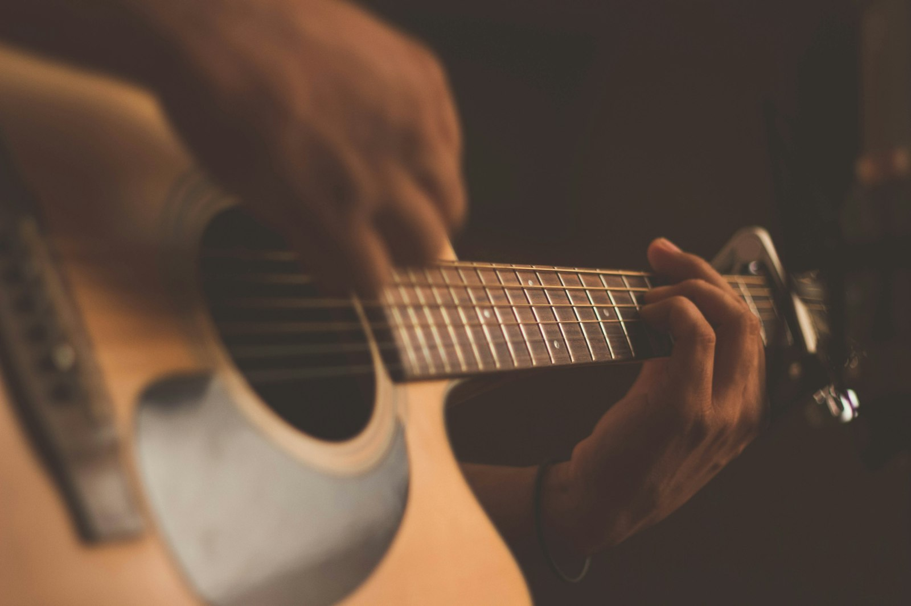

Workshop

TaKeTiNa®
Schritte, Klatschen und Stimme verbinden sich zu einem tiefen, gemeinschaftlichen Rhythmuserlebnis — entschleunigend und kraftvoll zugleich.
Mehr erfahren →Willkommen auf meiner Website, schön, dass Du da bist! Ich bin Maximilian Resch — Musiker, Rhythmiker/Musik- und Bewegungspädagoge und TaKeTiNa-Teacher in Wien. In meinen Workshops, Kursen und Seminaren geht es über das Hören der Musik hinaus — sie wird mit dem ganzen Körper erlebt und erfahrbar gemacht.


Ob im TaKeTiNa-Rhythmusprozess, Rhythmik-Kurs oder Gitarrenunterricht: Im Mittelpunkt steht das unmittelbare Erleben. Kein Leistungsdruck, kein Notenzwang — sondern der eigene Im-Puls, der eigene Körper, die eigene Stimme.
Von Rhythmusreisen bis zum handfesten Gitarrengroove — hier findest du dein Format.
Schritte, Klatschen und Stimme verbinden sich zu einem tiefen, gemeinschaftlichen Rhythmuserlebnis — entschleunigend und kraftvoll zugleich.
Mehr erfahren →
Der Körper als Instrument — Puls, Groove und Koordination spielerisch entwickeln. Für Gruppen mit Kindern, Jugendlichen und/oder Erwachsenen.
Mehr erfahren →
Musik und Bewegung als gemeinsame Sprache entdecken — ein Workshop, der Rhythmusgefühl, Wahrnehmung und Ausdruck spielerisch in Gang bringt. Für Gruppen mit Kindern, Jugendlichen und/oder Erwachsenen.
Mehr erfahren →
Vom ersten Akkord bis zum feinen Fingerstyle — individueller Unterricht, der sich an deiner Musik und deinem Tempo orientiert.
Mehr erfahren →
Gemeinsames Erleben verbindet: Fortbildungen für Pädagog:innen, energievolle Rhythmus-Events für Teams und Organisationen, schwungvolles Miteinander mit kreativem Ausdruck im Klassenzimmer.
Mehr erfahren →Musik zum Zuhören: Auftritte solo und im Ensemble. Alle anstehenden Konzerttermine findest du im Veranstaltungskalender.
Zu den Terminen →Musik ist der kürzeste Weg von Mensch zu Mensch.Yehudi Menuhin
Platzhalter — echte Stimmen aus Workshops und Kursen folgen.
„Ich bin ohne jede Erfahrung in den TaKeTiNa-Workshop gekommen — und mit einem Lächeln und einem völlig neuen Körpergefühl gegangen. Maximilian schafft einen Raum, in dem man einfach ankommen darf.“
„Der Gitarrenunterricht bei Maximilian ist das Highlight meiner Woche. Er holt mich genau dort ab, wo ich stehe — geduldig, humorvoll und musikalisch einfach großartig.“
„Unser Team spricht heute noch vom Rhythmus-Event! Selten haben wir uns als Gruppe so verbunden gefühlt. Absolute Empfehlung für jede Organisation.“